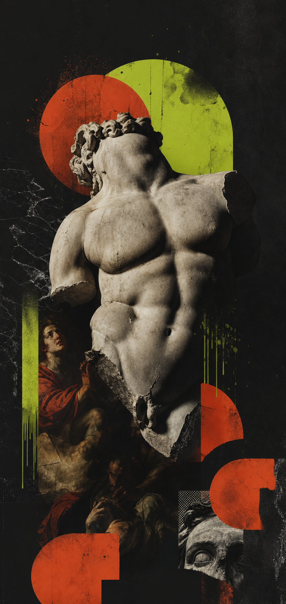
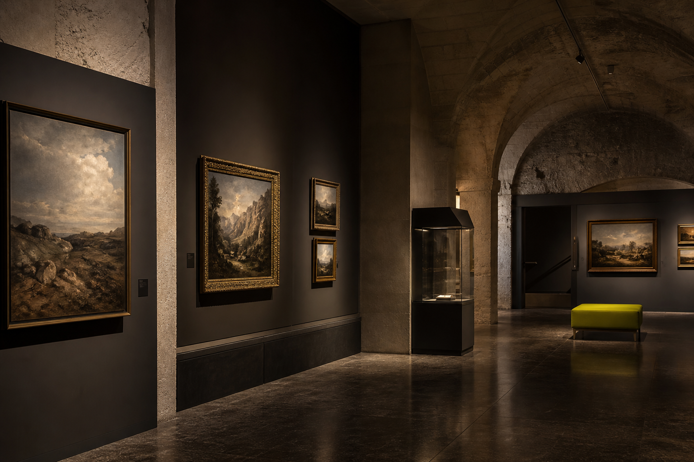

House edit
A disciplined mix of old-world texture and modern friction.
Objects are grouped by mood, material, and gesture, giving visitors an easy route through the collection.
Contemporary art house
A compact cultural venue prototype with exhibitions, private views, late openings, and a moody editorial identity.

01
Convalis et malesuada sed
Focused edit of sculpture, painting, objects, and sound arranged for intimate visits and collector previews.
Go to visitHouse edit
Objects are grouped by mood, material, and gesture, giving visitors an easy route through the collection.

Private rooms
Timed entry, compact groups, and hosted walkthroughs keep the experience personal without feeling staged.
Evening salon
A simple events layer gives the site enough commercial shape for launches, patrons, and partnerships.
02
A stripped-back events section for previews, tours, artist dinners, and collector evenings.
Hosted introduction to the summer edit with drinks in the lower gallery.
Extended evening opening with chamber sound and guided routes.
A small-format morning visit with the director and selected works.
Rooms and details
Limited opening
Hosted evenings for 20 guests, arranged by request.
03
Open Thursday to Sunday with late access on Fridays. Private visits and venue enquiries are handled by appointment.